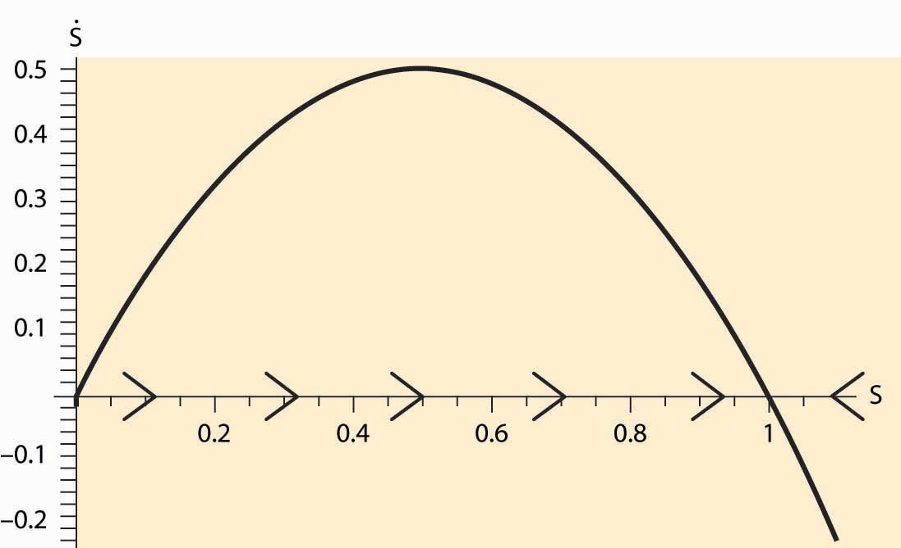
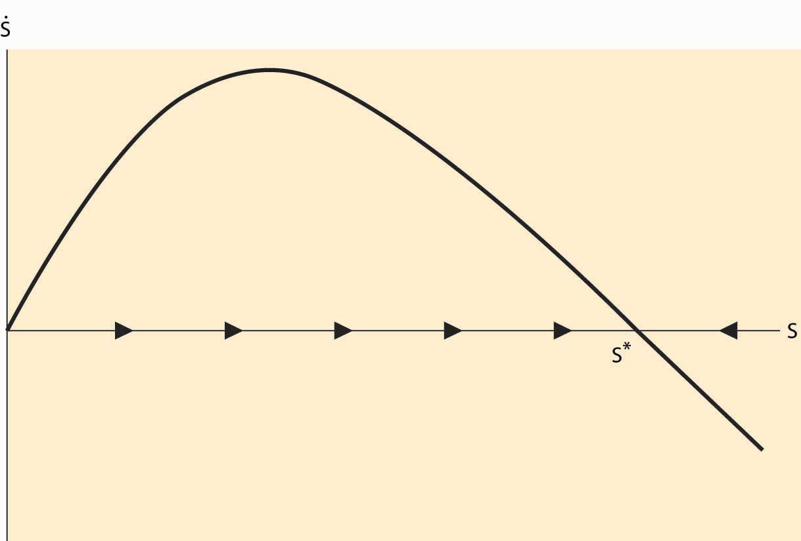
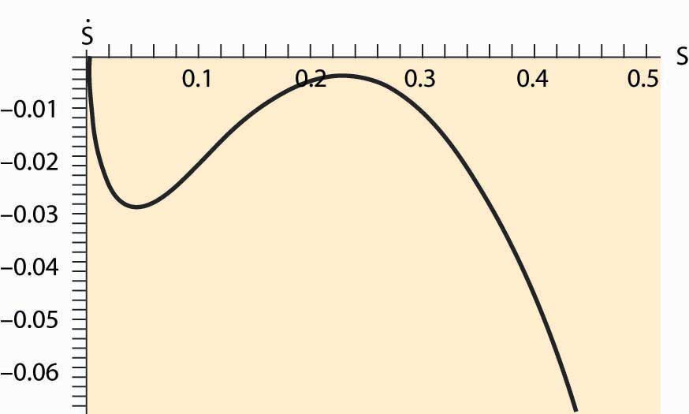
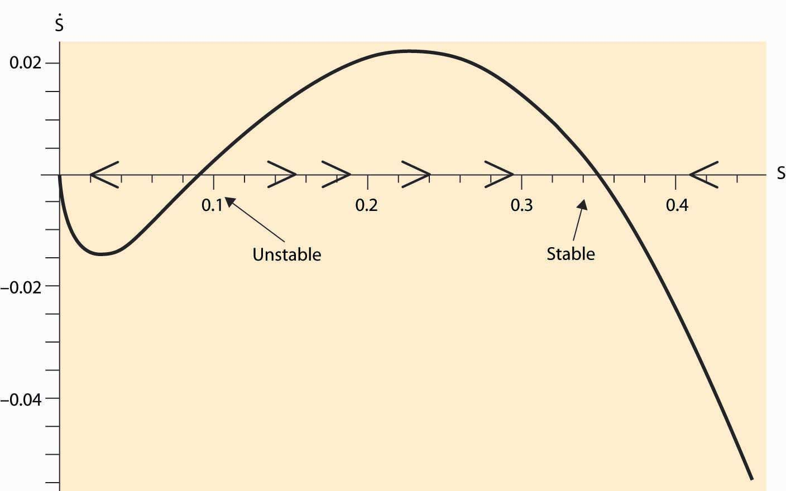

Consider an unregulated fishing market like the lobster market considered previously, and let S be the stock of fish. The purpose of this example is illustrative of the logic, rather than an exact accounting of the biology of fish populations, but is not unreasonable. Let S be the stock of a particular species of fish. Our starting point is an environment without fishing: How does the fish population change over time? Denote the change over time in the fish population by ( is notation for the derivative with respect to time, notation that dates back to Sir Isaac Newton). We assume that population growth follows the logistic equation This equation reflects two underlying assumptions. First, mating and reproduction are proportional to the stock of fish S. Second, survival is proportional to the amount of available resources 1 – S, where 1 is set to be the maximum sustainable population. (Set the units of the number of fish so that 1 is the full population.)
The dynamics of the number of fish are illustrated in Figure 7.5 "Fish population dynamics". On the horizontal axis is the number of fish, and on the vertical axis is the change in S. When > 0, S is increasing over time, and the arrows on the horizontal axis reflect this. Similarly, if < 0, S is decreasing.
Absent fishing, the value 1 is a stable steady stateCondition in which the variables stay constant and forces are balanced. of the fish population, in which the variables stay constant and forces are balanced. It is a steady state because, if S = 1, = 0; that is, there is no change in the fish population. It is stable because the effect of a small perturbation—S near but not exactly equal to 1—is to return to 1. (In fact, the fish population is very nearly globally stable. Start with any population other than zero and the population returns to 1.)It turns out that there is a closed form solution for the fish population:
Figure 7.5 Fish population dynamics
Now we introduce a human population and turn to the economics of fishing. Suppose that a boat costs b to launch and operate and that it captures a fixed fraction a of the total stock of fish S; that is, each boat catches aS. Fish sell for a price where the price arises from the demand curve, which in this case has constant elasticity ε, and Q is the quantity of fish offered for sale. Suppose there are n boats launched; then the quantity of fish caught is Q = naS. Fishers enter the market as long as profits are positive, which leads to zero profits for fishers; that is, This equation makes a company just indifferent to launching an additional boat because the costs and revenues are balanced. These two equations yield two equations in the two unknowns n and Q: and Q = naS. These two equations solve for the number of fish caught, and the number of boats,
Subtracting the capture by humans from the growth in the fish population yields
Thus, a steady state satisfies
Figure 7.6 Fish population dynamics with fishing
Will human fishing drive the fish to extinction? Extinction must occur when the only stable solution to the stock of fish is zero. Consider first the case when demand is elastic (ε > 1). Then, for S near zero but positive, because the other terms are small relative to the linear term. Thus, with elastic demand, there is always a steady state without extinction. (Extinction is also an equilibrium, too, but overfishing won’t get the system there.) This equilibrium is illustrated in Figure 7.6 "Fish population dynamics with fishing".
The dark curve represents , and thus for S between 0 and the point labeled S*, is positive and so S is increasing over time. Similarly, to the right of S*, S is decreasing. Thus, S* is stable under small perturbations in the stock of fish and is an equilibrium.
We see that if demand for fish is elastic, fishing will not drive the fish to extinction. Even so, fishing will reduce the stock of fish below the efficient level because individual fishers don’t take account of the externality they impose—their fishing reduces the stock for future generations. The level of fish in the sea converges to S* satisfying
In contrast, if demand is inelastic, fishing may drive the fish to extinction. For example, if r = 2 and a = b = 1, and ε = 0.7, extinction is necessary, as is illustrated in Figure 7.7 "Fish population dynamics: extinction".
Figure 7.7 Fish population dynamics: extinction
Figure 7.7 "Fish population dynamics: extinction" shows that, for the given parameters, the net growth of the fish population is negative for every value of the stock S. Thus, the population of fish consistently dwindles. This is a case when the fishing externality (overfishing today reduces the stock of fish tomorrow) has particularly dire consequences. The reason why the elasticity of demand matters is that, with inelastic demand, the fall in the stock of fish increases the price by a large amount (enough so that total revenue rises). This, in turn, increases the number of fishing boats, in spite of the fall in the catch. In contrast, with elastic demand, the number of fishing boats falls as the stock falls, reducing the proportion of fish caught, and thus preventing extinction. We see this for the equation for the number of fishing boats, , which reflects the fact that fishing effort rises as the stock falls if and only if demand is inelastic.
It is possible, even with inelastic demand, for there to be a stable fish population. Not all parameter values lead to extinction. Using the same parameters as before, but with ε = 0.9, we obtain a stable outcome as illustrated in Figure 7.8 "Possibility of multiple equilibria".
Figure 7.8 Possibility of multiple equilibria
In addition to the stable equilibrium outcome, there is an unstable steady state, which may converge either upward or downward. A feature of fishing with inelastic demand is that there exists a region where extinction is inevitable because, when the stock is near zero, the high demand price induced by inelasticity forces sufficient fishing to ensure extinction.
As a consequence of the fishing externality, nations attempt to regulate fishing, both by extending their own reach 200 miles into the sea and by treaties limiting fishing in the open sea. These regulatory attempts have met with only modest success at preventing overfishing.
What is the efficient stock of fish? This is a challenging mathematical problem, but some insight can be gleaned via a steady-state analysis. A steady state arises when If a constant amount Q is removed, a steady state in the stock must occur at This maximum catch then occurs at S = ½ and Q = ¼ r. This is not the efficient level, for it neglects the cost of boats, and the efficient stock will actually be larger. More generally, it is never efficient to send the population below the maximum point on the survival curve plotted in Figure 7.5 "Fish population dynamics".
Conceptually, fishing is an example of the tragedy of the commons externality already discussed. However, the threat of a permanent extinction and alluring possibility of solving dynamic models make it a particularly dramatic example.